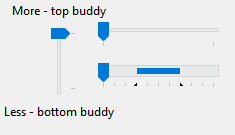

Class Slider
- Namespace
- FireBlade.WinInteropUtils.WinForms
- Assembly
- WinInteropUtils.WinForms.dll
Represents a control that allows the user to slide a slider along a track, commonly referred to as a track bar.

public class Slider : Control, IDropTarget, ISynchronizeInvoke, IWin32Window, IBindableComponent, IComponent, IDisposable- Inheritance
-
Slider
- Implements
- Inherited Members
Constructors
Slider()
public Slider()Properties
CreateParams
Gets the required creation parameters when the control handle is created.
protected override CreateParams CreateParams { get; }Property Value
- CreateParams
A CreateParams that contains the required creation parameters when the handle to the control is created.
FixedLength
Gets or sets a value indicating whether the length of the slider thumb can be overriden via the ThumbLength property.
public bool FixedLength { get; set; }Property Value
IsThumbVisible
Gets or sets whether the slider thumb is visible.
public bool IsThumbVisible { get; set; }Property Value
LargeChange
Gets or sets the amount of ticks that the slider will move when a large change occurs, such as moving the slider
with the PageUp/PageDown keys.
public int LargeChange { get; set; }Property Value
Remarks
Also commonly referred to as the "page size".
LeftBuddy
Gets or sets the buddy to the left of the slider if the slider is horizontal, or above the slider if the slider is vertical.
public Control? LeftBuddy { get; set; }Property Value
Exceptions
- ArgumentException
The buddy can't be set to a Form.
- ArgumentException
The buddy can't be set to the same Slider that the buddy is being set on.
Maximum
Gets or sets the maximum value the slider can represent.
public int Maximum { get; set; }Property Value
Minimum
Gets or sets the minimum value the slider can represent.
public int Minimum { get; set; }Property Value
Orientation
Gets or sets the orientation of the slider.
public Orientation Orientation { get; set; }Property Value
ReverseInput
Gets or sets whether input is reversed.
public bool ReverseInput { get; set; }Property Value
Remarks
By default, the control uses down equal to right and up equal to left. Enable to reverse the default, making down equal left and up equal right.
Reversed
Gets or sets whether the slider is reversed, where smaller numbers mean higher and larger numbers mean lower.
public bool Reversed { get; set; }Property Value
RightBuddy
Gets or sets the buddy to the right of the slider if the slider is horizontal, or below the slider if the slider is vertical.
public Control? RightBuddy { get; set; }Property Value
Exceptions
- ArgumentException
The buddy can't be set to a Form.
- ArgumentException
The buddy can't be set to the same Slider that the buddy is being set on.
SelectionRangeEnd
Gets or sets the end of the slider's selection range.
public int SelectionRangeEnd { get; set; }Property Value
Remarks
The slider's selection range does not affect its functionality in any way. It is up to the application to implement the range. You might do this in one of the following ways:
- Use a selection range to enable the user to set maximum and minimum values for some parameter. For example, the user could move the slider to a position and then click a button labeled "Max". The application then sets the selection range to show the values chosen by the user.
- Limit the movement of the slider to a predetermined subrange within the control, by handling the ValueChanging event and disallowing any movement outside the selection range. You might do this, for example, if the range of values available to the user can change because of other choices the user has made, or according to available resources.
SelectionRangeStart
Gets or sets the start of the slider's selection range.
public int SelectionRangeStart { get; set; }Property Value
Remarks
The slider's selection range does not affect its functionality in any way. It is up to the application to implement the range. You might do this in one of the following ways:
- Use a selection range to enable the user to set maximum and minimum values for some parameter. For example, the user could move the slider to a position and then click a button labeled "Max". The application then sets the selection range to show the values chosen by the user.
- Limit the movement of the slider to a predetermined subrange within the control, by handling the ValueChanging event and disallowing any movement outside the selection range. You might do this, for example, if the range of values available to the user can change because of other choices the user has made, or according to available resources.
ShowSelectionRange
Gets or sets a value indicating whether the slider's selection range should be shown.
public bool ShowSelectionRange { get; set; }Property Value
Remarks
The slider's selection range does not affect its functionality in any way. It is up to the application to implement the range. You might do this in one of the following ways:
- Use a selection range to enable the user to set maximum and minimum values for some parameter. For example, the user could move the slider to a position and then click a button labeled "Max". The application then sets the selection range to show the values chosen by the user.
- Limit the movement of the slider to a predetermined subrange within the control, by handling the ValueChanging event and disallowing any movement outside the selection range. You might do this, for example, if the range of values available to the user can change because of other choices the user has made, or according to available resources.
ShowToolTip
Gets or sets a value indicating whether to show a tooltip showing the value of the slider.
public bool ShowToolTip { get; set; }Property Value
SmallChange
Gets or sets the amount of ticks that the slider will move when a small change occurs, such as moving the slider with the arrow keys.
public int SmallChange { get; set; }Property Value
Remarks
Also commonly referred to as the "line size".
ThumbLength
Gets or sets the length of the thumb in pixels. Only applies when FixedLength is set to true.
public int ThumbLength { get; set; }Property Value
ThumbRect
Gets the size and position of the bounding rectangle for the slider.
public Rectangle ThumbRect { get; }Property Value
TickFrequency
public int TickFrequency { get; set; }Property Value
TickMode
Specifies the types of ticks displayed on the slider.
public SliderTickMode TickMode { get; set; }Property Value
TickStyle
Gets or sets the position of ticks in the slider.
public TickStyle TickStyle { get; set; }Property Value
ToolTipSide
Gets or sets the side where the tooltip should be displayed.
public SliderToolTipSide ToolTipSide { get; set; }Property Value
Value
Gets or sets the currently selected value of the slider.
public int Value { get; set; }Property Value
Methods
AddTick(int)
Adds a tick to the Slider at the specified position.
public void AddTick(int pos)Parameters
posintThe position of the tick.
ClearSelectionRange()
Clears the slider's selection range and redraws the control.
public void ClearSelectionRange()ClearSelectionRange(bool)
Clears the slider's selection range and optionally redraws the control.
public void ClearSelectionRange(bool redraw)Parameters
redrawboolWhether to redraw the control.
ClearTicks()
Removes the current tick marks from the slider. This message does not remove the first and last tick marks, which are created automatically by the slider.
public void ClearTicks()Dispose(bool)
Clean up any resources being used.
protected override void Dispose(bool disposing)Parameters
disposingbooltrue if managed resources should be disposed; otherwise, false.
GetTickCount()
Retrieves the number of tick marks in a slider.
public int? GetTickCount()Returns
- int?
If TickMode isn't set to Custom, returns 2 for the beginning and ending ticks. If it's set to None, returns zero. Otherwise, it takes the difference between the range minimum and maximum, divides by the tick frequency, and adds 2.
Remarks
The GetTickCount() method counts all of the tick marks, including the first and last tick marks created by the slider.
GetTickPosition(int)
Retrieves the logical position of a tick mark in a slider. The logical position can be any of the integer values in the slider's range of minimum to maximum slider positions.
public int GetTickPosition(int idx)Parameters
idxintZero-based index identifying a tick mark. Valid indexes are in the range from zero to two less than the tick count returned by the GetTickCount() method.
Returns
- int
The logical position of the specified tick mark, or -1 if
idxdoes not specify a valid index, or the handle of the slider hasn't been created.
GetTickPositions()
Retrieves an array that contains the positions of the tick marks for a slider.
public uint[]? GetTickPositions()Returns
- uint[]
An uint array. The elements of the array specify the logical positions of the slider's tick marks, not including the first and last tick marks created by the slider. The logical positions can be any of the integer values in the slider's range of minimum to maximum slider positions.
Remarks
The number of elements in the array is two less than the tick count returned by the GetTickCount() method. Note that the values in the array may include duplicate positions and may not be in sequential order. The returned array is valid until you change the slider's tick marks.
OnBackColorChanged(EventArgs)
Raises the BackColorChanged event.
protected override void OnBackColorChanged(EventArgs e)Parameters
OnHandleCreated(EventArgs)
Raises the HandleCreated event.
protected override void OnHandleCreated(EventArgs e)Parameters
WndProc(ref Message)
Processes Windows messages.
protected override void WndProc(ref Message m)Parameters
Events
HorizontalScroll
Fires when the slider scrolls horizontally.
public event EventHandler<SliderScrollEventArgs>? HorizontalScrollEvent Type
ValueChanging
Fires before the slider's value changes and allows validation.
public event EventHandler<SliderValueChangingEventArgs>? ValueChangingEvent Type
VerticalScroll
Fires when the slider scrolls vertically.
public event EventHandler<SliderScrollEventArgs>? VerticalScroll